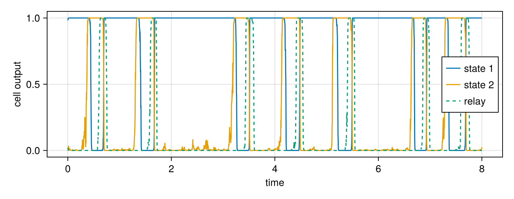

A two-way graph
A two-way edge is a pair of states that each follow the other. Some constructions can't represent one directly and need extra cells that aren't states. This tutorial fits the smallest such graph, two states that alternate, and looks at the extra cell.
using GenerateDynamicalNetworks
const GDN = GenerateDynamicalNetworksGenerateDynamicalNetworksThe specification
The "flip-flop" example: state 1 lasts 1 time unit on average and state 2 lasts 0.3.
spec = example("flip-flop"; noise=0.1)TransitionSpec(2 states, 2 edges, noise 0.1, sample 0.03)spec.P2×2 Matrix{Float64}:
0.0 1.0
1.0 0.0Hidden states in the Horchler backend
The Lotka–Volterra construction of Horchler can't have two nodes that each lead to the other. Its design first puts a hidden state on one of the two edges (Graphs that need hidden states):
r = GDN.repair(spec.P, spec.τ)
r.reasons1-element Vector{String}:
"2-cycle 1 ⇄ 2"r.P3×3 Matrix{Float64}:
0.0 0.0 1.0
1.0 0.0 0.0
0.0 1.0 0.0The graph now has three nodes in a ring, 1 → 3 → 2 → 1. Node 3 is hidden: the decoder never reports it, and the time spent there counts towards state 1.
Relay cells in the CTRNN backend
CTRNNDesign builds a continuous-time recurrent neural network with one cell per state. While one cell is on, it holds back each cell that can follow it only weakly, and noise eventually fires one of them. The cell that fires then switches the others off through strongly negative weights.
For a two-way pair that plan asks one weight to do two jobs. The weight from cell 2 to cell 1 would have to be strongly negative, so that cell 2 switches cell 1 off when it fires, and close to zero, so that noise can fire cell 1 while cell 2 is on. The design therefore sends one direction of the pair through a hidden relay cell: noise fires the relay, and the relay switches the state cell on.
model = fit(spec, CTRNNDesign());The model has three cells, of which the first two are states:
size(model.W, 1), model.visible(3, 2)The weights, with W[i, j] the weight from cell j to cell i:
round.(model.W; digits=2)3×3 Matrix{Float64}:
0.23 -0.35 0.46
-0.05 0.23 -0.35
-0.35 0.01 0.23W[2, 1]is the edge 1 → 2: while cell 1 is on, cell 2 is held back only weakly.W[1, 2]is strongly negative: when cell 2 fires it switches cell 1 off.- The edge 2 → 1 goes through cell 3, the relay.
W[3, 2]is close to zero, so the relay is barely held back while cell 2 is on, andW[1, 3]is the relay driving cell 1 on. In this fitW[3, 2]came out slightly positive: the relay isn't held back at all, and rises by itself once cell 2 is on.
Acceptance
acceptance = accept(model, spec)Acceptance: PASS
set 1: Check(dwell 0.995 0.300, err% -0.5 +0.0, rms 0.37%, off 0.00%, dwell ok, branches ok: PASS)
set 2: Check(dwell 0.999 0.299, err% -0.1 -0.2, rms 0.18%, off 0.00%, dwell ok, branches ok: PASS)
half step: Check(dwell 1.002 0.299, err% +0.2 -0.3, rms 0.25%, off 0.00%, dwell ok, branches ok: PASS)Seeing the relay
As in A three-state ring, the trajectory comes from solving the model's equation directly. A cell's output is the logistic function of $g\,(y_i + b_i)$.
using SciMLBase, StochasticDiffEqLowOrder
every, dt = GDN.frame_steps(model, spec.sample, 0.01)
q = GDN.parameters(model)
problem = SDEProblem(GDN.drift_function(model), GDN.noise_function(model), GDN.initial_state(model), (0.0, 8.0), q;
seed=UInt64(1))
sol = solve(problem, EM(); dt, saveat=spec.sample / 10)
output(y, i) = 1 / (1 + exp(-q.g * (y[i] + q.b[i])));using CairoMakie
CairoMakie.activate!(; type="png")
fig = Figure(; size=(720, 280))
ax = Axis(fig[1, 1]; xlabel="time", ylabel="cell output")
for (i, label) in enumerate(["state 1", "state 2", "relay"])
lines!(ax, sol.t, [output(y, i) for y in sol.u]; label, linestyle=i == 3 ? :dash : :solid)
end
axislegend(ax; position=:rc)
State 2 follows state 1 directly. On the way back the relay fires first, at the end of a visit to state 2, and state 1 comes on right after it. The relay then switches off again.
The dynamical class
classify(model, spec)(class = :excitable, outcomes = "stable stable stable stable stable")Without noise the system settles at a stable equilibrium: each state is a resting point, and noise is what carries the system over the threshold to the next one. This model is excitable, unlike the heteroclinic models of the other two tutorials (Dynamical classes).